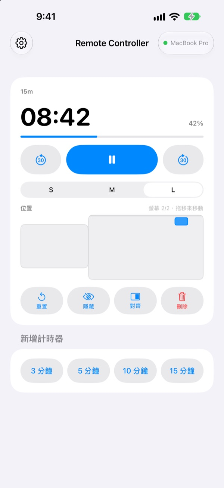
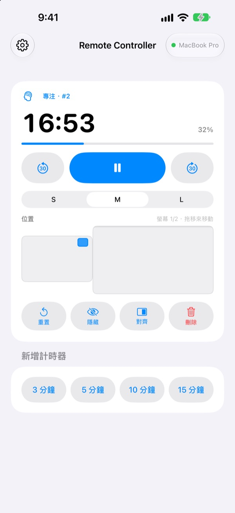
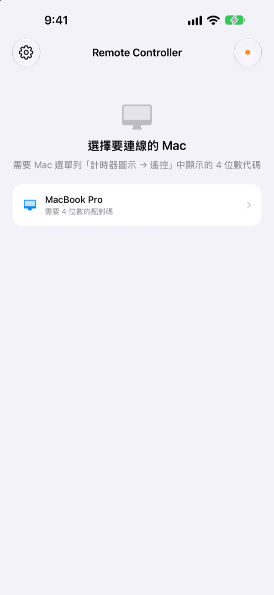

人離開 Mac
計時器還在手上
在 iPhone 上操作 Mac 裡 StickyPresenter 的計時器。走到台前，一樣能看剩餘時間、暫停、加 30 秒，或把擋住圖表的計時器移到旁邊。
免費 · iOS 17 或以上版本 · 需要同一個 Wi‑Fi 上一台正在執行 StickyPresenter 的 Mac。

還在為了動一下計時器走回筆電前嗎？
講超時了，想多要一點時間；計時器偏偏壓在最重要的那張圖表上。以前只能當著觀眾走過講台，伸手去摸觸控式軌跡板。有了 Remote Controller，你站在原地，在 iPhone 上點一下就好。
看著剩餘時間，當場調整
剩餘時間和進度每秒更新。使用番茄鐘時，還看得到現在是專注還是休息、進行到第幾輪。
講太久就加 30 秒，提早講完就減 30 秒。3、5、10、15 分鐘的新計時器點一下就開始；小工具可在 S、M、L 之間切換，坐在後排也看得清楚。

配對碼只要輸入一次
打開 App，同一個 Wi‑Fi 上正在執行 StickyPresenter 的 Mac 都會列在清單裡。選擇你的 Mac，輸入 Mac 選單列計時器圖示 ▸ 遙控中顯示的四位數代碼就完成了。
之後每次打開 App，都會自動連上那台 Mac。不需要帳號，也沒有伺服器，兩部裝置在區域網路中直接溝通。

三個步驟就能開始
- 1
在 Mac 上打開 StickyPresenter
選單列出現計時器圖示就準備好了。就算關掉所有視窗，App 也會留在選單列。
- 2
在同一個 Wi‑Fi 上打開 App
詢問是否允許存取區域網路時，請點一下「允許」，這樣才找得到你的 Mac。
- 3
選擇 Mac 並輸入代碼
輸入 Mac 選單列計時器圖示 ▸ 遙控中顯示的四位數配對碼，就能開始操作。
在 iPhone 上能做什麼
- 剩餘時間
- 剩餘時間、進度、番茄鐘的專注或休息與輪次，每秒更新
- 開始 · 暫停
- 中間一顆大按鈕搞定
- 減 30 秒 · 加 30 秒
- 兩側按鈕立即調整進行中的計時器
- 新增計時器
- 3、5、10 或 15 分鐘
- 大小
- 小工具 S、M、L 三種尺寸
- 位置
- 在縮小的 Mac 螢幕配置上拖移，有延伸顯示器還能拖到另一個螢幕
- 隱藏
- 暫時不讓觀眾看到小工具
- 對齊
- 把找不到的小工具叫回計時器視窗旁邊
- 重置 · 刪除
- 讓計時器從頭開始，或刪除它
- 捷徑 · Siri
- 說
用 Remote Controller 開始計時，就能在 Mac 上啟動計時器
遙控器只能操作 Mac 上正在執行的計時器。便利貼和提詞機講稿不會傳到 iPhone，也不能用來換投影片。
常見問題
只用 iPhone App 可以嗎？
不行。Remote Controller 是 Mac 版 StickyPresenter 的遙控器，同一個 Wi‑Fi 上的 Mac 必須正在執行 StickyPresenter。Mac App 可以從下方連結取得，或從 App 設定裡的「取得 Mac App」取得。
清單裡找不到我的 Mac。
超過 10 秒還找不到 Mac 時，App 會顯示檢查清單。請從上往下逐項確認：Mac 上的 StickyPresenter 正在執行（選單列有計時器圖示）；兩部裝置連的是同一個 Wi‑Fi（訪客網路不行）；已在 iPhone 的「設定」▸「隱私權與安全性」▸「區域網路」開啟 Remote Controller；已在 Mac 的「系統設定」▸「隱私權與安全性」▸「區域網路」允許 StickyPresenter；VPN 已關閉。
顯示代碼不正確。
請輸入 Mac 選單列計時器圖示 ▸ 遙控中目前顯示的四位數。如果有人在 Mac 上按過「產生新的配對碼」，就只有新的代碼有效。
顯示 Mac 已不記得這部 iPhone。
在 Mac 上選了「清除已配對的遙控器」，或重新安裝 StickyPresenter 之後會出現這個訊息。在清單中點一下該 Mac，再輸入一次配對碼即可。
顯示 Mac 沒有回應。
請確認 Mac 沒有進入睡眠、兩部裝置在同一個 Wi‑Fi，並且已關閉 VPN。
顯示「Mac App 需要更新」。
Mac 上的 StickyPresenter 版本比遙控器舊。請到 Mac App Store 更新，再從清單重新選擇那台 Mac。
會議室裡有好幾台 Mac，安全嗎？
安全。遙控器只會連上已配對的那一台 Mac，不知道代碼的遙控器連不到你的 Mac。所有內容都透過同一個網路內的加密直接連線傳送。如果代碼曾經被別人看到，請在 Mac 上按「產生新的配對碼」。
有哪些資料會經由網際網路傳送？
計時器和操作指令不會離開你的區域網路。經由網際網路傳送的只有匿名使用統計、當機報告，以及你主動送出的意見回饋。詳情請見隱私權政策。
上台前可以用 Siri 啟動計時器嗎？
可以。對 Siri 說「用 Remote Controller 開始計時」，或在「捷徑」使用「在 Mac 上開始計時」動作。App 會打開，一連上 Mac 就開始你設定長度（1 到 600 分鐘）的計時。
有疑問、遇到問題或想提建議，請寄信到 mizzking75@gmail.com。也可以從 App 左上角的齒輪 ▸ 意見回饋，直接用 iPhone 傳給我們。